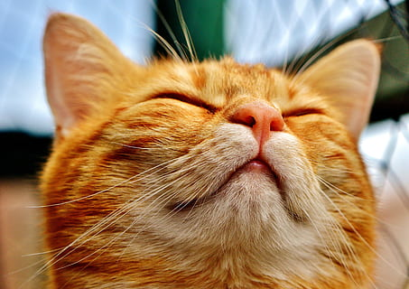

 A tabby cat, or simply tabby, is any domestic cat (Felis catus) with a distinctive M-shaped marking on its forehead, stripes by its eyes and across its cheeks, along its back, around its legs and tail, and characteristic striped, dotted, lined, flecked, banded, or swirled patterns on the body: neck, shoulders, sides, flanks, chest, and abdomen. The four known distinct patterns, each having a sound genetic explanation, are the mackerel, classic or blotched, ticked, and spotted tabby patterns. "Tabby" is not a breed of cat but a coat pattern found in many official cat breeds. It is very common among the general population of mixed-breed cats around the world.[1] The tabby pattern occurs naturally and is connected both to the coat of the domestic cat's direct ancestor and to those of its close relatives: the African wildcat (Felis lybica lybicai>), the European wildcat (Felis silvestris) and the Asiatic wildcat (Felis lybica ornata), all of which have similar coats, both by pattern and coloration. One genetic study of domestic cats found at least five founders.
The English term tabby originally referred to "striped silk taffeta", from the French word tabis, meaning "a rich watered silk". This can be further traced to the Middle French atabis (14th century), which stemmed from the Arabic term عتابية / ʿattābiyya.[4] This word is a reference to the Attabiya district of Baghdad, noted for its striped cloth and silk;[5] itself named after the Umayyad governor of Mecca Attab ibn Asid. Such silk cloth became popular in the Muslim world and spread to England, where the word "tabby" became commonly used in the 17th and 18th centuries.[6] Use of the term tabby cat for a cat with a striped coat began in the 1690s, and was shortened to tabby in 1774. The notion that tabby indicates a female cat may be due to the feminine proper name Tabby as a nickname of "Tabitha".[7]
The four known distinct patterns, each having a sound genetic explanation, are the mackerel, classic, ticked, and spotted tabby patterns.[8][9] A fifth pattern is formed by any of the four basic patterns being included as part of a patched pattern. A patched tabby is a cat with calico or tortoiseshell markings combined with patches of tabby coat (such cats are called caliby and torbie, respectively, in cat fancy).[1] All five patterns have been observed in random-bred populations. Several additional patterns are found in specific breeds and so are not as well known. For example, a modified classic tabby is found in the Sokoke breed. Some of these rarer patterns are because of the interaction of wild and domestic genes, as with the rosette and marbled patterns found in the Bengal breed.
Mackerel (Striped) Tabby
The mackerel, or striped, tabby pattern is made up of thin vertical, gently curving stripes on the sides of the body. These stripes can be continuous or broken into bars and short segments/spots, especially on the flanks and stomach. Three or five vertical lines in an "M" shape almost always appear on the forehead, along with dark lines from the corners of the eyes, one or more crossing each cheek, and of course many stripes and lines at various angles on the neck and shoulder area, on the flanks, and around the legs and tail, marks which are more or less perpendicular to the length of the body part. Mackerel tabbies are also called 'fishbone tabbies,' probably doubly named after the mackerel fish.[10] Mackerels are the most common among tabbies.[1]
Classic (Blotched) Tabby
The classic tabby, also known as blotched tabby, has the 'M' pattern on the forehead but, rather than primarily thin stripes or spots, the body markings are thick curving bands in whorls or a swirled pattern, with a distinctive mark on each side of the body resembling a bullseye. 80% of modern-day cats have the recessive allele responsible for the classic pattern.[11] Black tabbies generally have dark browns, olives, and ochres that stand out more against their black colors. Classic tabbies each have a light-colored "butterfly" pattern on the shoulders and three thin stripes (the center stripe being the darkest) running along the spine. The legs, tail, and cheeks of a classic tabby have thick stripes, bands, and/or bars. The gene responsible for the coloring of a classic tabby is recessive.[11] Many American shorthair cats demonstrate this pattern.[12]
Ticked Tabby
The ticked tabby pattern is due to even fields of agouti hairs, each with distinct bands of color, which break up the tabby patterning into a salt-and-pepper appearance that makes them look sand-like—thus there are few to no stripes or bands. Residual ghost striping and/or barring can often be seen on the lower legs, face, and belly and sometimes at the tail tip, as well as the standard 'M' and a long dark line running along the spine, primarily in ticked tabbies that also carry a mackerel or classic tabby allele. These types of cats come in many forms and colors.
Spotted Tabby
It's thought that the spotted tabby results from a modifier gene that breaks up the mackerel tabby pattern and causes the stripes to appear as spots. Similarly, the classic tabby pattern may be broken by the spotted tabby gene into large spots. One can see both large and small spot patterns in the Australian Mist, Bengal, Serengeti, Savannah, Egyptian Mau, Arabian Mau, Maine Coon, and Ocicat breeds, among others, as well as some crosses. Naturally, the most common spotted tabby looks most similar to the mackerel tabby, including the classic marks on the limbs, tail, and head, as well as the 'M' on the forehead.
Orange Tabby
The orange tabby, also commonly called red or ginger tabby, is a color-variant of the above patterns, having pheomelanin (O allele) instead of eumelanin (o allele). Though generally a mix of orange and white, the ratio between fur color varies, from a few orange spots on the back of a white cat to a completely orange coloring with no white at all. The orange areas can be darker or lighter spots or stripes, but the white is nearly always solid and usually appears on the underbelly, paws, chest, and muzzle. The face markings are reminiscent of the mackerel or classic tabby and, with orange/white, inclusion of a white spot on the face that covers the mouth, coming to a point around the forehead. Because a masking gene is present on white fur, its inclusion is often asymmetrical, leading to more or less white fur on each paw or side of the face.[13] Roughly 75% of ginger cats are male.[14] Male cats with the gene for orange can be either X°Y ginger or X-Y black or non-ginger tabby. Females with the gene have three possibilities: X-X- black or non-ginger tabby, X°X° ginger, and X-X° tortoiseshell, thus male cats cannot be tortoiseshell unless they have two X chromosomes.[14]
Torbies and Calibies
Since female cats have two X chromosomes, it is possible for them to have the O (orange) allele on one X chromosome and o (black) on the other. This causes both colors to appear in random patches, either with or without the tabby pattern. When paired with the tabby pattern, these cats are known as torbie cats. If there is also white spotting, the cat is known as a caliby (US English).
Two distinct gene loci, the agouti gene locus (two alleles) and the tabby locus (three alleles), and one modifier, spotted (two alleles), cause the four basic tabby patterns. The fifth pattern is emergent, being expressed by female cats with one black and one orange gene on each of their two X chromosomes, and is explained by Barr bodies and the genetics of sex-linked inheritance.[8][9] The agouti gene, with its two alleles, A and a,[15] controls whether or not the tabby pattern is expressed. The dominant A expresses the underlying tabby pattern, while the recessive non-agouti or "hyper-melanistic" allele, a, does not. Solid-color (black or blue) cats have the aa combination, hiding the tabby pattern, although sometimes a suggestion of the underlying pattern can be seen ("ghost striping"). This underlying pattern, whether classic, mackerel, ticked or spotted, is most easily distinguishable under bright light in the early stages of kittenhood and on the tail in adulthood. However, the agouti gene primarily controls the production of black pigment, so a cat with an O allele for orange color will still express the tabby pattern. As a result, both red cats and the patches of red on tortoiseshell cats will always show tabby patterning, though sometimes the stripes are muted—especially in cream and blue/cream cats due to the pigment dilution. The mackerel pattern and its Tm allele at the tabby gene locus is dominant over the classic (or blotched) allele, Tb. So a cat with a TmTm or TmTb genotype sets the basic pattern of thin stripes (mackerel tabby) that underlies the coat, while a TbTb cat will express a classic tabby coat pattern with thick bands and a ring or concentric stripes on its sides. The ticked tabby pattern is a result of a different allele at the same gene locus as the mackerel and classic tabby patterns and this allele is dominant over the others. So a TaTa genotype as well as TaTm and TaTb genotypes will be ticked tabbies. The ticked tabby coat essentially masks any other tabby pattern, producing a non-patterned, or agouti tabby (much like the wild type agouti coat of many other mammals and the sable coat of dogs), with virtually no stripes or bars. If the ticked allele is present, no other tabby pattern will be expressed. The ticked allele actually shows incomplete dominance: cats homozygous for the ticked allele (TaTa) have less barring than cats heterozygous for the ticked allele (TaTm or TaTb).[8] The spotted gene is a separate locus theorized to be directly connected to the Tm allele; it 'breaks' the lines and thin stripes of a mackerel tabby, creating spots. The spotted gene has a dominant and a recessive allele as well, which means a spotted cat will have an Sp Sp or Sp sp genotype along with at least one Tm allele and at least one A allele at those alleles respective loci.
Personality and aggression vary widely from cat to cat, and is multifactorial.[16] A 2015 study from University of California, Davis sought to examine the relationship between coat color and behavior in cats.[17] Researchers ran statistical analyses from 1,274 online surveys completed by cat owners. The owners were asked to rank the cats' aggressiveness during interactions with human aggression, handling aggression, and veterinary aggression. The study concluded that, though aggressive behaviors did show up in different levels between different coats, these were relatively minor.[17] The larger differences in aggression seemed to researchers to be sex-linked, rather than related to any coat pattern or coloring:[17] With all coat colors combined, females were identified by their guardians as more aggressive during veterinary visits compared with males (X² = 10.36, p = .001). Analyses showed that gray-and-white and black/brown/gray tabby females were more aggressive than their male counterparts at veterinarian's offices (X² = 9.28, p = .002, and X² = 5.00, p = .025, respectively). A similar study also reported no evidence of a link between a cat's behavior and its coat pattern; however, it suggested that any differences were just how they were being perceived, i.e. people perceive orange cats as "friendly" and white cats as "shy", and then look for confirmation of these perceptions.[18]
Since the tabby pattern is a common wild type, it might be assumed that medieval cats were tabbies. However, one writer believed this to be untrue, at least in England. Sometime after the mid-17th century, the natural philosopher John Aubrey noted that William Laud, the Archbishop of Canterbury was "a great lover of Cats" and "was presented with some Cyprus-cats, i.e. our Tabby-Cats". He then claimed that "I doe well remember that the common English Catt, was white with some blueish piednesse [i.e. with grey parts]. The race or breed of them is now almost lost."[19] However, most drawings or paintings of cats in medieval manuscripts do show them to be tabbies.[20]
Due to the pattern being expressed by both pure and mixed-breed cats, a large number of famous cats fall into the "tabby" category. A few of the most notable examples include:
This is a copy of the Wikipedia page "Tabby Cat". All information on this page comes from Wikipedia.